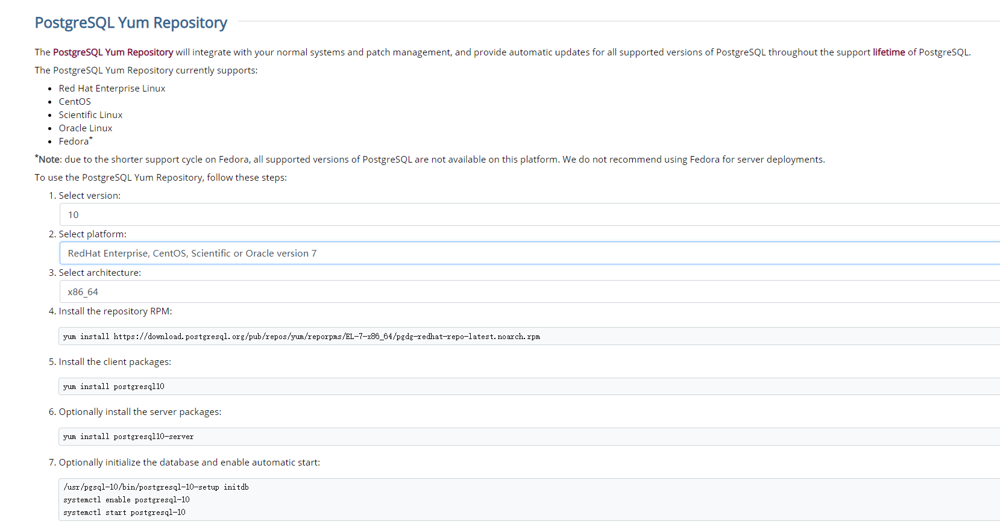
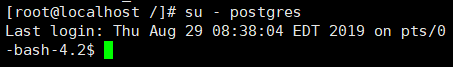
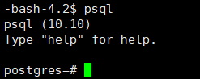
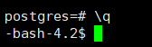
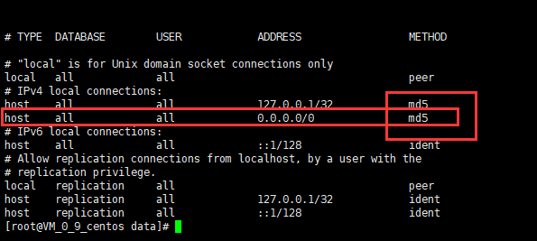
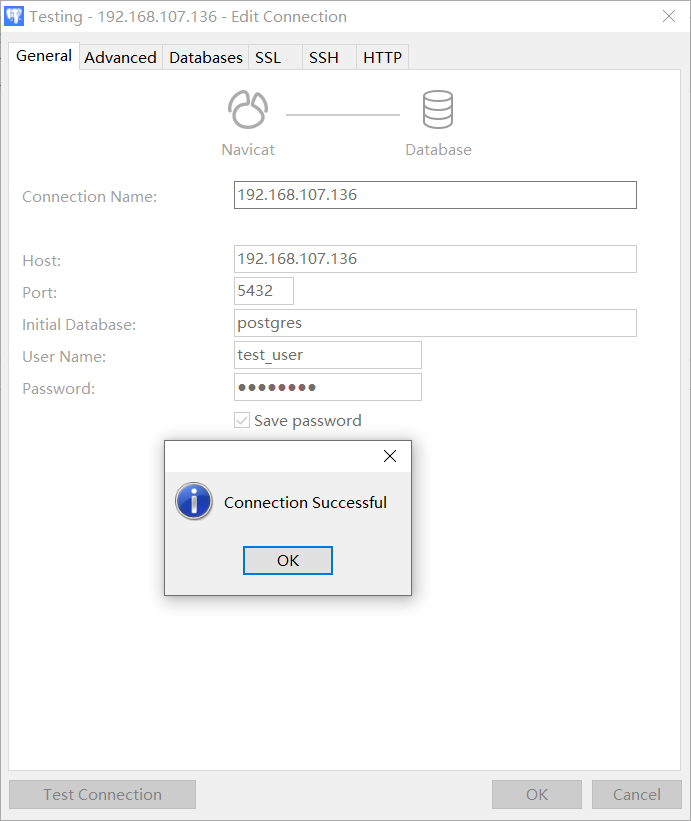
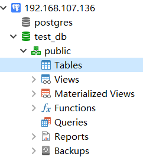
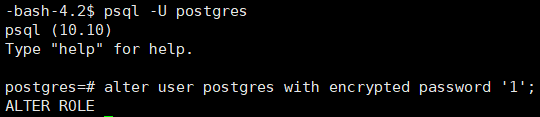

3. CentOS安装PostgreSQL¶
版本信息：
CentOS版本：CentOS-7-x86_64-Minimal-1810
PostgreSQL版本： PostgreSQL 10.10, 64-bit
3.1. PostgresSQL的安装¶
1、安装rpm文件
yum install https://download.postgresql.org/pub/repos/yum/reporpms/EL-7-x86_64/pgdg-redhat-repo-latest.noarch.rpm
2、安装客户端
yum install postgresql10
3、安装服务端
yum install postgresql10-server
4、初始化
/usr/pgsql-10/bin/postgresql-10-setup initdb
5、设置自动启动并且启动postgresql服务
systemctl enable postgresql-10
systemctl start postgresql-10
postgresql的安装比较简单，官网上有明确的操作步骤

3.2. 创建用户和数据库¶
1、使用postgres用户登录（PostgresSQL安装后会自动创建postgres用户，无密码）
su - postgres


create user test_user with password 'abc123'; // 创建用户
create database test_db owner test_user; // 创建数据库
grant all privileges on database test_db to test_user; // 授权
4、退出psql（输入 \q 再按回车键即可）
\q

3.3. 开启远程访问¶
1、修改/var/lib/pgsql/10/data/postgresql.conf文件，取消 listen_addresses 的注释，将参数值改为 *
2、修改/var/lib/pgsql/10/data/pg_hba.conf文件，增加下图红框部分内容,并将ident改为md5

3、切换到root用户，重启postgresql服务
systemctl restart postgresql-10.service
4、使用数据库连接工具测试连接


3.4. 补充¶
1、修改默认生成的 postgres 用户密码（此postgres非上面的postgres用户，此为数据库的用户，上面的为操作系统的用户）
su - postgres
psql -U postgres
alter user postgres with encrypted password '1';

2、服务启动、关闭、重启、查看状态命令
systemctl start postgresql-10.service // 启动服务
systemctl stop postgresql-10.service // 关闭服务
systemctl restart postgresql-10.service // 重启服务
systemctl status postgresql-10.service // 查看状态